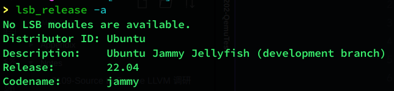
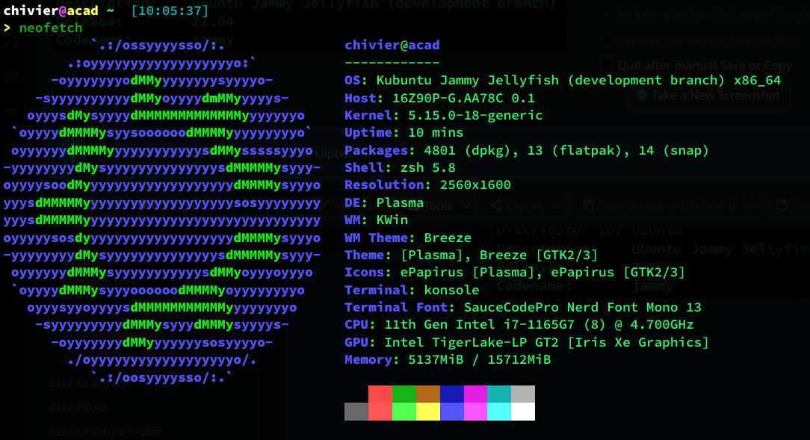
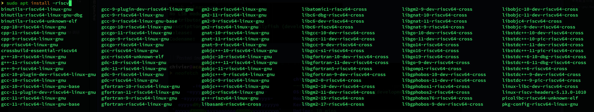
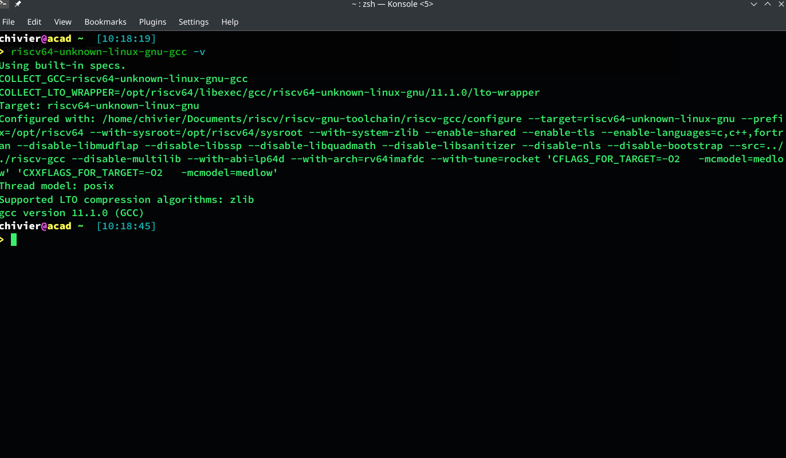

由于重装系统之后，我的本地实验环境一直没有找时间去重新配置。在这里总结一下关于 riscv 测试环境的一些配置方法。
主要参考为：
本地配置环境
本地系统环境如下：


内核有点更新过头，不过不碍事，可以继续正常使用。
1
2
3
4
5
| sudo apt install autoconf automake autotools-dev curl libmpc-dev libmpfr-dev libgmp-dev \
gawk build-essential bison flex texinfo gperf libtool patchutils bc \
zlib1g-dev libexpat-dev git \
libglib2.0-dev libfdt-dev libpixman-1-dev \
libncurses5-dev libncursesw5-dev
|
就完成了准备环境的安装。
我们之后的工作单独建立一个目录：
1
2
3
4
| cd ....[Anything you like]
mkdir riscv
cd riscv
export RISCV_EXP_HOME=$PWD
|
使用软件源
一个偷懒的方法是使用软件源里已经编译完成的 riscv 软件工具链。使用 apt 可以看到如下的包可以选择进行安装：

编译安装（推荐）
1
2
| cd $RISCV_EXP_HOME
git clone https://gitee.com/mirrors/riscv-gnu-toolchain
|
直接下载 gitee 上的镜像，速度更快。
之后我们需要对一个模块进行切除：
1
2
| cd riscv-gnu-toolchain
git rm qemu
|
Qemu 我们之后自己进行安装。
接着复制子模块内容：
1
| git submodule update --init --recursive
|
然后进行 autoconf 工具链的编译：
1
2
| ./configure --prefix=/opt/riscv64
sudo make linux -j 4
|
最后测试安装是否成功：
1
| riscv64-unknown-linux-gnu-gcc -v
|

其实如果是为了测试编译的话，我们到这一步已经完成了。如果需要检验我们是否有可靠的 riscv 环境下的可用二进制可执行文件，我们需要使用 Qemu 进行测试。
Qemu
首先下载解压：
1
2
3
4
| cd $RISCV_EXP_HOME
wget https://download.qemu.org/qemu-5.1.0.tar.xz
tar xf qemu-5.1.0.tar.xz
cd qemu-5.1.0.tar.xz
|
Autoconf 软件，老样子直接安装，注意需要指定一下这里是 riscv 的工作环境：
1
2
3
| ./configure --target-list=riscv64-softmmu,riscv64-linux-user --prefix=/opt/qemu
make -j 4
sudo make install
|
编译内核
再完成上面两个步骤之后，我们最重要的工具链已经基本完成了。可以把下面的这句写到环境变量里面：
1
| export PATH=$PATH:/opt/riscv64/bin:/opt/qemu/bin
|
下载内核，可以从镜像下载，这里选择一个特定的内核版本：
1
2
| git clone git@gitee.com:mirrors/linux_old1.git
git checkout v5.4
|
内核编译就是沿用如下方法：
1
2
| make ARCH=riscv CROSS_COMPILE=riscv64-unknown-linux-gnu- defconfig
make ARCH=riscv CROSS_COMPILE=riscv64-unknown-linux-gnu- -j 4
|
制作文件系统
这里使用 busybox 制作，首先下载源码：
1
2
| git clone https://gitee.com/mirrors/busyboxsource.git
cd busyboxsource
|
1
| CROSS_COMPILE=riscv64-unknown-linux-gnu- make menuconfig
|
打开配置菜单后进入第一行的 “Settings”，在”Build Options”节中，选中 “Build static binary (no shared libs)”，设置好后退出保存配置。
之后再次配置和编译：
1
2
| CROSS_COMPILE=riscv64-unknown-linux-gnu- make -j 4
CROSS_COMPILE=riscv64-unknown-linux-gnu- make install
|
完成之后我们回到实验目录：
1
| qemu-img create rootfs.img 4g
|
安排 4g 的实验空间。将它文件格式定为 ext4：
之后把刚刚在 busybox 中生成的内容移动过来：
1
2
3
4
5
6
7
8
| cd $RISCV_EXP_HOME
mkdir rootfs
sudo mount -o loop rootfs.img rootfs
cd rootfs
sudo cp -r ../busyboxsource/_install/* .
sudo mkdir proc sys dev etc etc/init.d
cd etc/init.d/
sudo touch rcS
|
在 RC 文件中写入一些基本信息：
1
2
3
| mount -t proc none /proc
mount -t sysfs none /sys
/sbin/mdev -s
|
修改 RC 权限：
安全期间，退文件环境。
至此，我们已经完成了所有的操作。
使用 Qemu 启动
1
| qemu-system-riscv64 -M virt -m 256M -nographic -kernel linux/arch/riscv/boot/Image -drive file=rootfs.img,format=raw,id=hd0 -device virtio-blk-device,drive=hd0 -append "root=/dev/vda rw console=ttyS0"
|
我们就可以启动了。我个人使用 alias 将上面命名为 rsicvexp 方便自己进行测试。
之后测试的时候在外部交叉编译生成 riscv 的可执行文件，复制到 rootfs 里面，然后就可以进行运行和测试了。